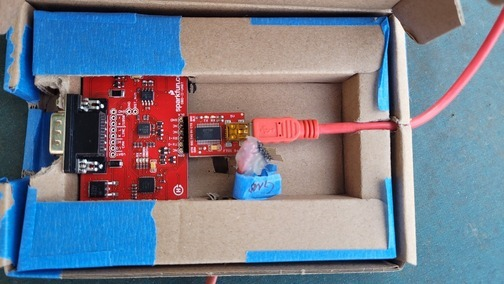
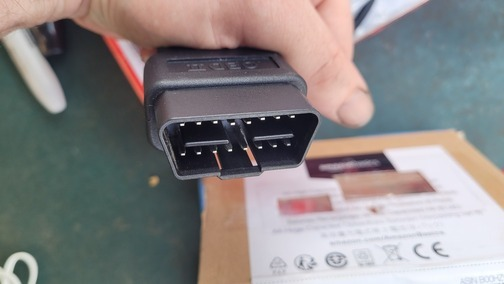

Many vehicles in the 1980's and 1990's began to use the On-Board Diagnostics, or OBD protocol. This allows an external device to plug in to the OBD port and read data made available by the Engine Control Unit. This is useful for diagnostics and monitoring of various systems that aren't displayed on the instrument cluster.
An overview of the brain of the OBD 1 and 2 reader
Wikipedia On-Board DiagnosticsThe OBD1 wires that are plugged into the board
Modern vehicles use the OBD2 protocol - This is too new for my 95 truck, but I am able to combine the functionality of reading both OBD1 and OBD2 into one device.
The serial-to-OBD2 male plug
The serial end of the serial-to-OBD2 cable
The serial port of the OBD to USB converter
The OBD1 wires used to interface with [what pins?] of the OBD1 or ALDL female plug in the truck